按现有插画留白安排全部八个栏目和主题按钮。此页是落位图册，不是新增的官网界面。点击图像可查看原尺寸。
第02款按完整样机定稿；其它19款依据所给缩略图定位，未重画插画。生产以原SVG实际色块和响应式裁切为准；坐标与约束见「实施/二十款落位.json」。
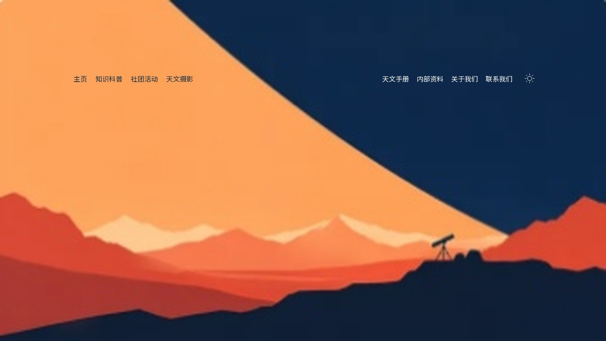
左右天空各一组，分别落在橙色与深蓝区域；文字不跨昼夜弧线。
中心(0.22, 0.23)，深字，4列；中心(0.76, 0.23)，浅字，5列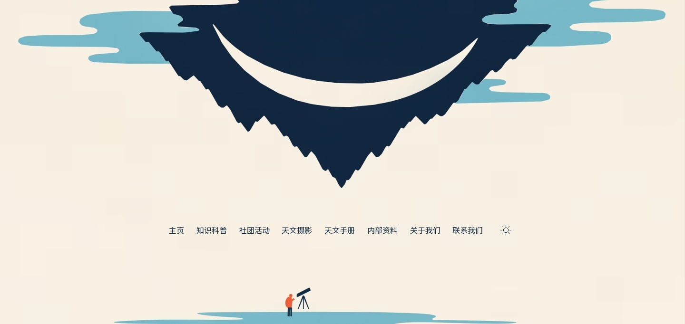
倒悬尖端以下、人物以上的暖白留白；保留一条完整横向阅读序列。
中心(0.5, 0.71)，深字，9列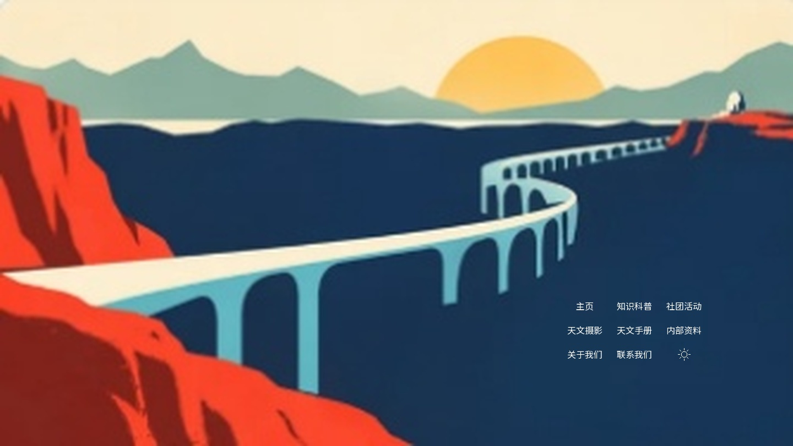
桥下偏右的深蓝空白，三列三行；避开桥墩与左侧红色前景。
中心(0.8, 0.74)，浅字，3列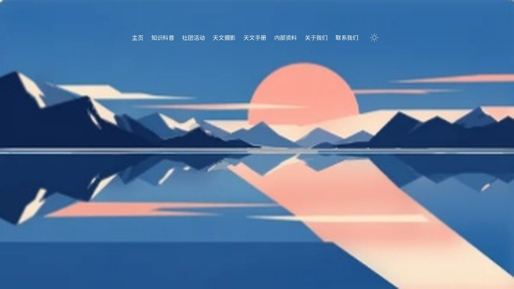
蓝色天空上方；日轮、山线和水面全部留在导航以下。
中心(0.5, 0.13)，浅字，9列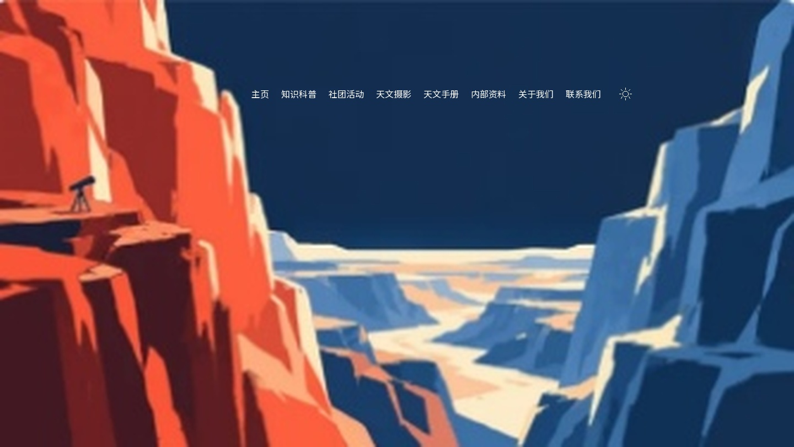
两侧崖壁之间的深蓝天空；两端不能越入红崖或浅色崖缘。
中心(0.56, 0.21)，浅字，9列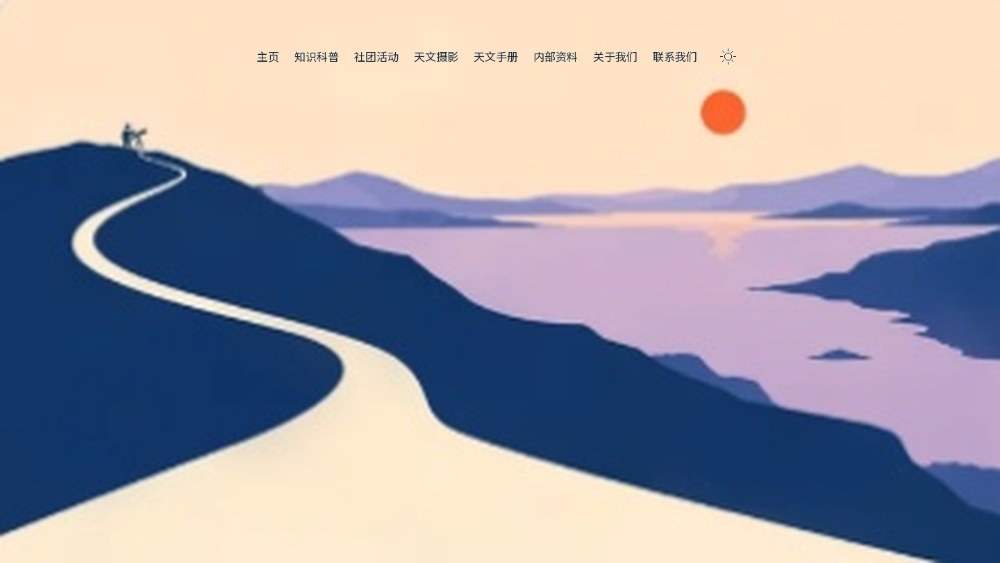
顶部浅色天空；红日和山坡位于下方，不沿蜿蜒路径写字。
中心(0.5, 0.1)，深字，9列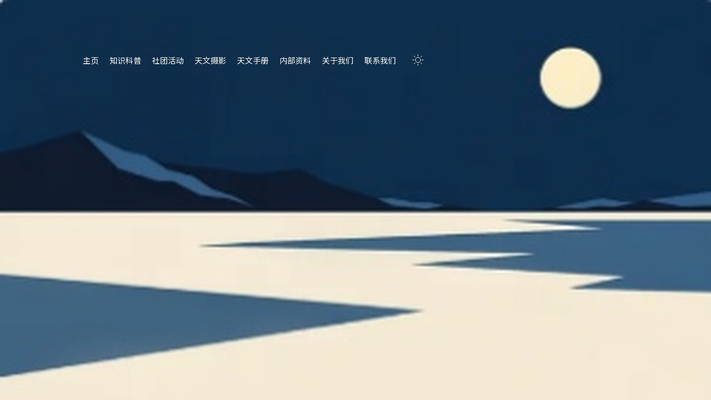
左上深蓝天空，右侧月亮留空；整行偏左而非跨满全宽。
中心(0.36, 0.15)，浅字，9列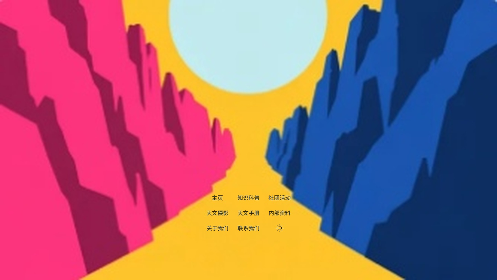
下方黄色通道中较宽的一段；三列三行，不盖中央天体，不跨两侧崖面。
中心(0.5, 0.76)，深字，3列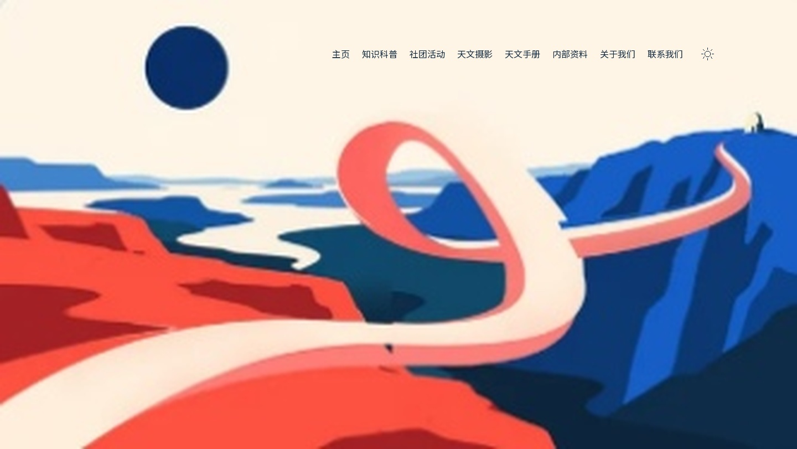
右上暖白天空，避开左侧圆形天体与下方轨道；单行偏右。
中心(0.66, 0.12)，深字，9列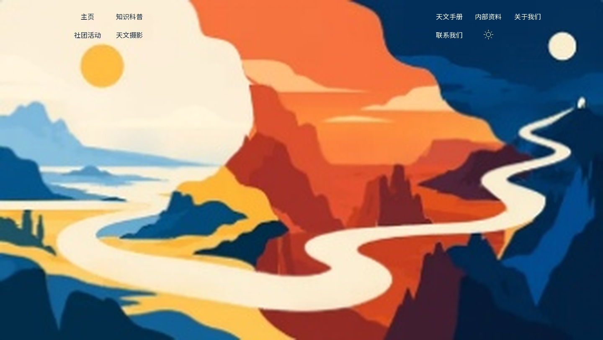
顶部左浅右深两片天空分别安放；上部空间薄，避开太阳、月亮、折页。
中心(0.18, 0.075)，深字，2列；中心(0.81, 0.075)，浅字，3列10、18顶部留白较薄，接入时按原SVG色边逐项核对。
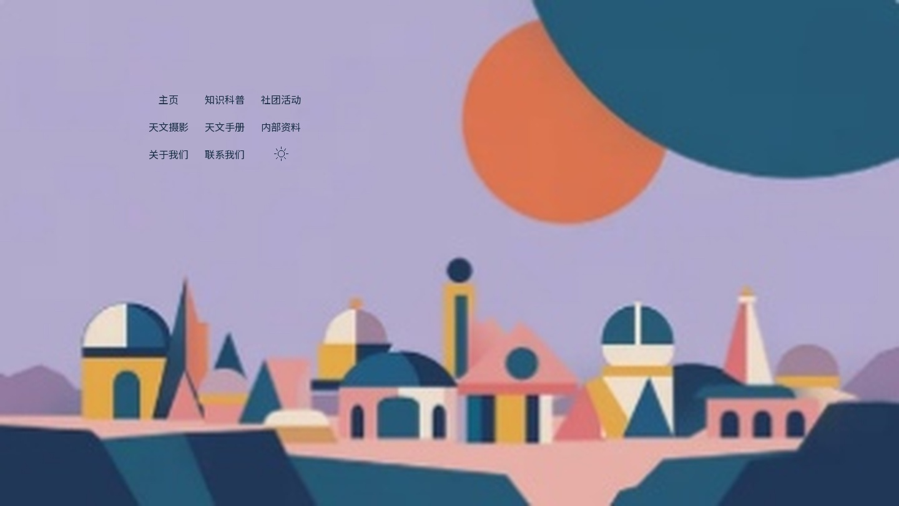
左上紫灰天空；避开右侧天体，组底保持在建筑群上方。
中心(0.25, 0.25)，深字，3列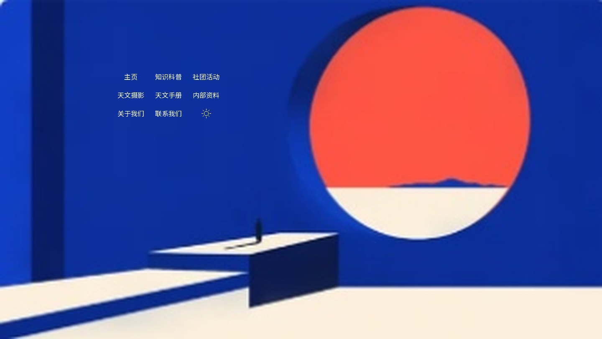
左侧蓝色平面，圆形开口左边；不压阶梯和小人物。
中心(0.28, 0.28)，浅字，3列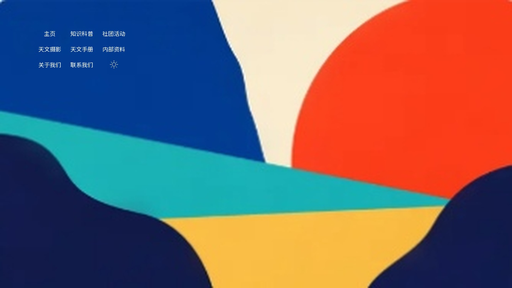
左上蓝色色块内部；组右缘不能跨入中间暖白区域。
中心(0.16, 0.17)，浅字，3列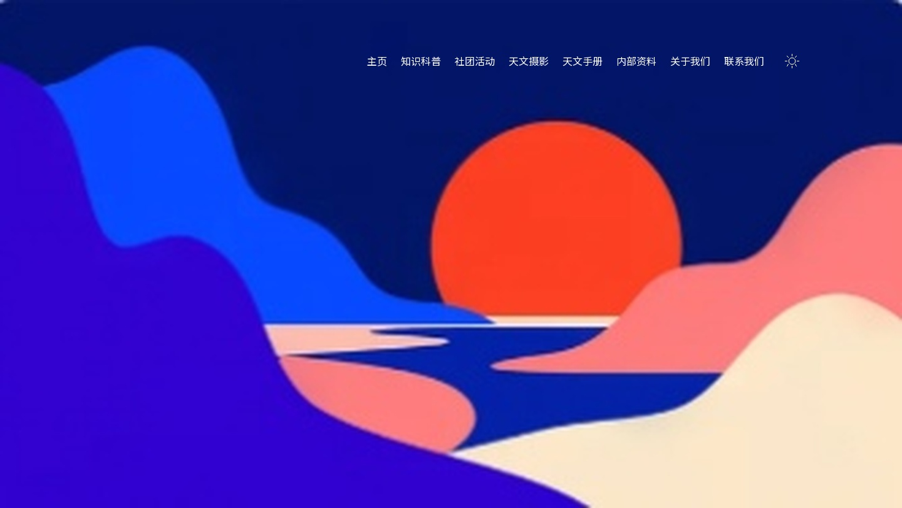
上方深蓝天空偏右；红日和左侧蓝紫山体留出。
中心(0.65, 0.12)，浅字，9列右侧红日下方、海平线上方的暖色留白；避开左侧轮廓。
中心(0.76, 0.61)，深字，3列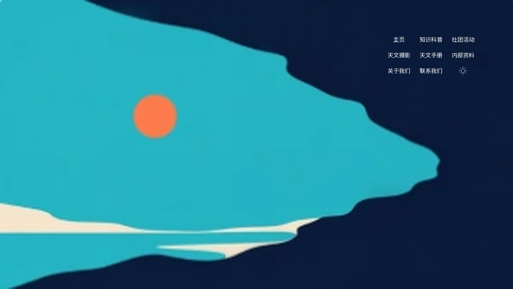
右上深蓝空白；青色主形与橙点不进入文字区。
中心(0.84, 0.19)，浅字，3列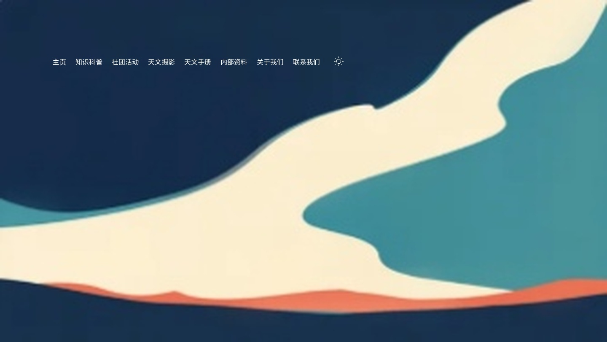
左上深蓝大面；整行结束在白色剪口之前。
中心(0.33, 0.18)，浅字，9列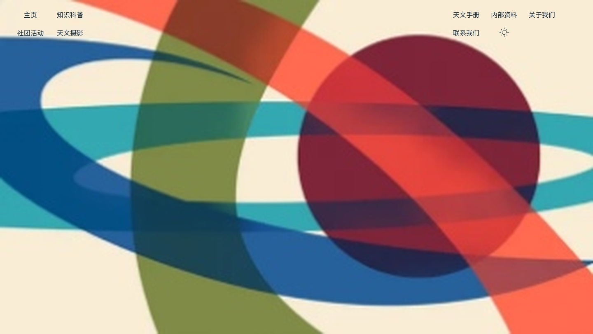
只用顶部左右未叠色的暖白窄区；不把复杂叠色中部当作导航底。
中心(0.085, 0.07)，深字，2列；中心(0.85, 0.07)，深字，3列10、18顶部留白较薄，接入时按原SVG色边逐项核对。
左上暖白负空间；避开红圆、青绿胶囊以及下方深蓝边界。
中心(0.115, 0.14)，深字，3列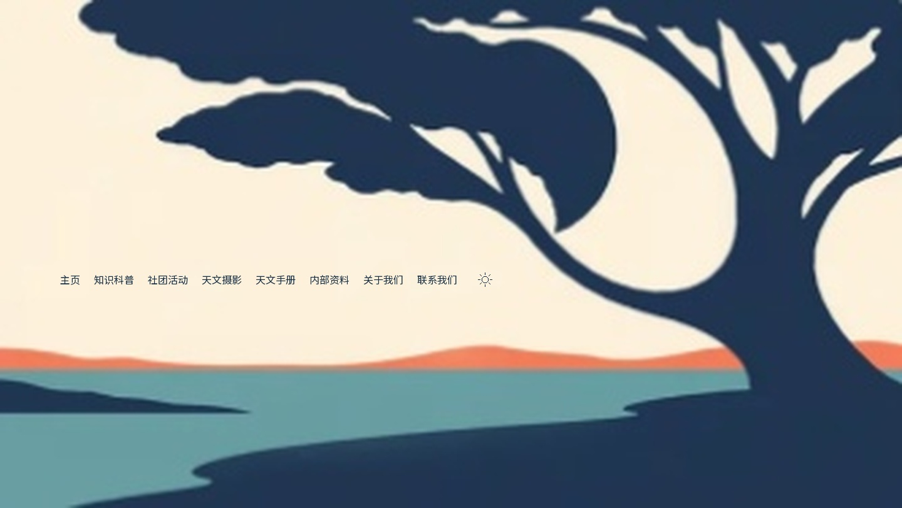
树冠下面、地平线上面的左侧暖白留白；不沿树枝排列。
中心(0.31, 0.55)，深字，9列